august 2005
RPD UltraSonic Range Detector
This module detects objects with the help of ultrasound. Although the hardware circuit is much simpeler (just one IC) then the well known SFR04, it has at least equal performance. This is because there are also some tricks in the software.
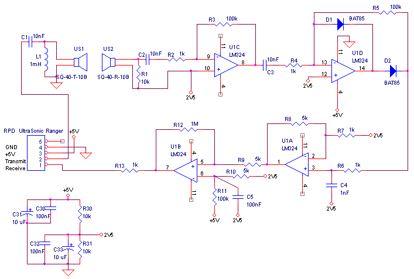
The main parts of the transmitter consists of L1 and US1. The US-transducer (while not yet at it's resonance frequency) behaves like a pure capacitor, the combination of L1 and US1 forms an resonance LC-circuit, in which energy can be stored and where this energy will be converted to US sine wave of about 40 kHz. Due to the weird impedance behaviour of US1, it's not necessary to exactly tune the LC-circuit. Because a lot of energy can be stored in L1, we can control the transmitter with just 1 pin. (Using 2 opposite connected IO-pins to drive the transmit circuit doesn't add any extra energy. With this circuit ranges of 3 .. 4 metre are no problem, so there's no need to use higher voltages than the PIC's 5 Volt. Besides, in most cases we're more interested in short ranges, say below 20 cm, and therefore extra effort should be invested to lower the output of the transmitter, to reduce cross-talk. The latter is implemented as one of the software tricks.
The receiver circuit starts of course at US2. Resistor R1 damps the oscillation circuit (for low frequencies) of US2, which is important if you want to measure short ranges (the signal loss due to absorbtion of energy in R1 is small, C2+R2 ~1500 Ohm @ 40kHz).The first amplifier U1C amplifies the signal (@ 40 kHz) by about a factor 100k/1k5=65. This slightly too high for the LM324 (GBW=1.2MHz). The great benefit of this is that high frequencies are filtered in this way by the quality of the opamp, so we don't need extra components. Of course the amplifiers are coupled with a small capacitor (1nF = 500 Ohm @ 40 kHz) to filter out the high frequencies.
The second stage (around U1D), also amplifies the signal by 65, but this stage also rectifies the signal. The rectified signal is integrated by R6 and C4. The integrated (low frequency signal) is now amplified by a factor 5 (U1A). The stage U1A has another important function, namely to supply a low impedance source for the smitt-trigger.
Finally U1B is setup as a smitt-trigger, to detect US-levels that are large enough.
Resistor R13 is simply an extra safety against wrong programming of the PIC.
Some important notes, about this circuit, that might easy be overlooked:
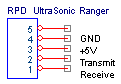 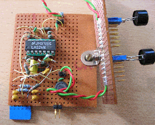
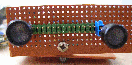 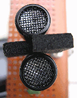
Some experiments
Top channel is the transmit puls, measured on the transducer.
Bottom channel is the amplified and rectified received signal, measured at connection of D2/R6.
|
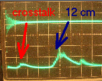 |
Transducer space = 3 mm Transmit puls = float - low - high - 1us - float In this case the transmitted energy is so low that, although visible, the crosstalk echo will not be detected. |
|
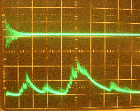 |
Transducer space = 3 mm Transmit puls = float - low - high - 6us - float We increased the transmit energy, to extend the measurement range and to detect smaller objects. From the tracing on the left, the problem is clear, the crosstalk is detected and we cann't detect very well in the first 5 cm.
Performance: none (unless multiple detections are allowed) |
|
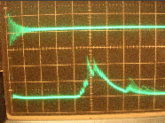 |
And here a magic trick: parameters equal to the previous recording, but just a small piece of material put assymetrical between the transducers.
The crosstalk is totally invisible!!
Performance: Large Object Measurement Range = 2 .. 30 cm Pencil Measurement Range = 2 .. 6 cm Closest Detection = 5 mm |
|
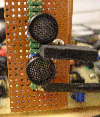 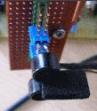 |
The piece of foam is about 15*10 mm and 3mm thick. A small piece of aluminium also works.The piece of foam extends about 5 mm in front of the transducers. All these measures are not very sensitive, the real important thing is that the piece of material is exactly placed at the half of the transducers.
The explanation (I'm good in fairy tails ;-), half of the sound travels the normal way through the air from transmitter to receiver, the other half of the sound energy goes around the piece of material. These 2 waves meet at the receiver sensor, but because they are 180 degrees out of phase, they cancel each other. |
|
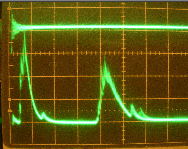 |
Increasing the energy to the maximum (for this kind of puls) Transducer space = 3 mm Transmit puls = float - low - high - 14us - float Object: large at 30 cm
Performance: none |
|
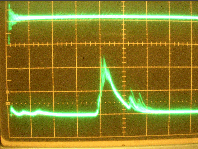 |
And now with the magic piece of foam, beautiful !!
Performance: Large Object Measurement Range = 2 .. 50 cm Pencil Measurement Range = 2 .. 10 cm Closest Detection = 5 mm (due to the foam) |
Now can we reach the same results without the magic piece of foam ?
Yes, another way to achieve this is to move the transducers further away from each other.
|
sorry, lost the picture |
Increasing the energy to the maximum (for this kind of puls) Transducer space = 30 mm Transmit puls = float - low - high - 14us - float Object: large at 30 cm
Performance: Large Object Measurement Range = 2 .. 50 cm Pencil Measurement Range = 2 .. 10 cm Closest Detection = 2 mm |
There's just one little disadvantage (besides the module becomes larger), at lower ranges the measurements aren't very linear, simply because of trigonometrics.
Conclusion
From the measurements above (and some other measurements not documented here), we can draw the following conclusions:
Software
The Software starts with a very low energy transmit puls. After a short deadspace (<2mm), it tries to detect echoes within a relative short measurement range. If an echo is found, the detection is ready. If no echo was found, it tries again with an medium energy transmit puls, a longer deadspace and a longer measurement. If still no echo is found, the procedure is repeated with more energy and longer times/distances.
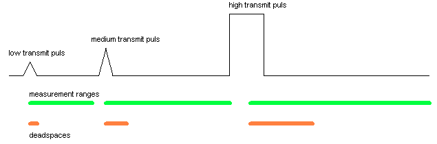
Normally the transmit pin is left floating, so the resonance circuit can transform electrical energy into ultrasound. The transmit puls for the low energy level is shown below. The exitating puls is just a half (or less) positive puls. By varying the time the pin is not floating (here 14 usec = halfwave, maximum for this kind of puls), we can control how much energy is stored in L1 and therefor how much ultrasound energy is produced. For the medium and high energy pulses, we generate a number of full wave exitations. The number of full waves determine the ultrasound energy that will be produced. More then 20 full waves, doesn't add much energy to the puls, but just make the sound last longer.
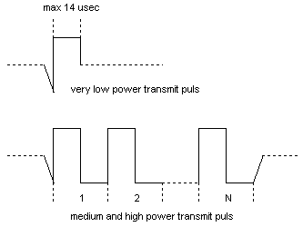
For each of the ranges (low,medium, high), all the parameters, like transmit energy, deadspace and measurement range, can be easily adapted in the software.
Transducer Placement
If the minimal desired distance is 5 cm or larger, it doesn't matter how the transducers are placed.
If short ranges, downto 2 mm are desired, we've 2 choices, either place the transducers far from each other (>3 cm) or place the magic piece of foam.
transducers 3 cm from each other
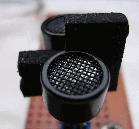 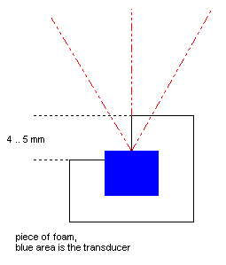
transducer, place against each other, with the magic piece of foam in between.
JALcc macro call
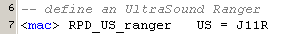
JALcc use
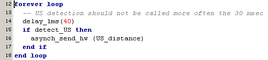
JALcc macro expansion
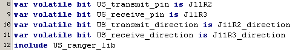
BackGround Information
Shop with a whole range of US range finders Devantech Ltd.
Ultrasonic Tranducers & Ultrasonic signals
Ultrasonic Doppler Transceiver Transducers Sensors Air 40Khz